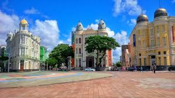

Localização e Significado
O Marco Zero, na Praça Rio Branco, é conhecido como local de fundação da cidade do Recife e também como ponto inicial de contagem das distâncias calculadas a partir da cidade. O lugar é um dos pontos mais importantes na capital Pernambucana, pois é também uma região de forte movimento durante o Carnaval. Aproveite sua visita para tirar uma foto com os dois marcos (o antigo e o novo), observar a vista para o Parque de Esculturas e os edifícios do Centro Cultural da Caixa e da Associação Comercial de Pernambuco.
Localização: Praça Rio Branco, Recife Antigo
Significado: Ponto de fundação da cidade e referência para medição de distâncias
Marco Histórico: Coluna em granito com brasão da cidade e inscrição "Marco Zero"
Estátua do Barão do Rio Branco: Homenagem ao patrono da diplomacia brasileira, obra do escultor francês Félix Charpentier
Rosa dos Ventos: Mosaico colorido no piso da praça, indicando as direções cardinais
Zero Novo: Monumento em aço inoxidável com design moderno, inaugurado em 2013